vignettes/getting-started.Rmd
getting-started.RmdThe AgentsMCP package provides a comprehensive implementation of the Agentic Neural Network Economic Model (ANNEM), featuring heterogeneous AI agents with neural decision-making capabilities, Model Context Protocol (MCP) communication, and dynamic network formation.
# Install from GitHub
devtools::install_github("avishekb9/AgentsMCP")
library(AgentsMCP)
#> Registered S3 method overwritten by 'quantmod':
#> method from
#> as.zoo.data.frame zoo
library(ggplot2)
library(dplyr)
#>
#> Attaching package: 'dplyr'
#> The following objects are masked from 'package:stats':
#>
#> filter, lag
#> The following objects are masked from 'package:base':
#>
#> intersect, setdiff, setequal, unionLet’s start with a simple ANNEM analysis using a small number of agents:
# Set seed for reproducibility
set_annem_seed(42)
# Run a basic ANNEM analysis
results <- run_annem_analysis(
symbols = c("AAPL", "MSFT"),
n_agents = 100,
n_steps = 50,
save_results = FALSE,
verbose = FALSE
)
# View summary
annem_summary(results)ANNEM implements six different types of heterogeneous agents:
# Create different types of agents
momentum_agent <- create_annem_agent("agent_001", "neural_momentum", 1000000)
contrarian_agent <- create_annem_agent("agent_002", "contrarian_ai", 1000000)
# Display agent properties
cat("Momentum Agent:\n")
#> Momentum Agent:
cat("- ID:", momentum_agent$id, "\n")
#> - ID: agent_001
cat("- Type:", momentum_agent$type, "\n")
#> - Type: neural_momentum
cat("- Wealth:", scales::dollar(momentum_agent$wealth), "\n")
#> - Wealth: $1,000,000
cat("- Risk Tolerance:", round(momentum_agent$risk_tolerance, 3), "\n\n")
#> - Risk Tolerance: 0.165
cat("Contrarian Agent:\n")
#> Contrarian Agent:
cat("- ID:", contrarian_agent$id, "\n")
#> - ID: agent_002
cat("- Type:", contrarian_agent$type, "\n")
#> - Type: contrarian_ai
cat("- Wealth:", scales::dollar(contrarian_agent$wealth), "\n")
#> - Wealth: $1,000,000
cat("- Risk Tolerance:", round(contrarian_agent$risk_tolerance, 3), "\n")
#> - Risk Tolerance: 0.682The package can automatically download market data or work with synthetic data:
# Generate synthetic market data for testing
synthetic_data <- generate_synthetic_data(
n_days = 100,
n_assets = 2,
annual_return = 0.08,
annual_volatility = 0.20
)
#> Generated 100 days of synthetic data for 2 assets
cat("Generated", nrow(synthetic_data$prices), "days of data for",
ncol(synthetic_data$prices), "assets\n")
#> Generated 100 days of data for 2 assets
cat("Assets:", paste(synthetic_data$symbols, collapse = ", "), "\n")
#> Assets: Asset_1, Asset_2
# Plot synthetic price evolution
if (requireNamespace("ggplot2", quietly = TRUE)) {
price_df <- data.frame(
day = 1:nrow(synthetic_data$prices),
price = synthetic_data$prices[, 1]
)
ggplot(price_df, aes(x = day, y = price)) +
geom_line(color = "steelblue", size = 1) +
labs(
title = "Synthetic Asset Price Evolution",
x = "Trading Day",
y = "Price ($)"
) +
theme_minimal()
}
#> Warning: Using `size` aesthetic for lines was deprecated in ggplot2 3.4.0.
#> ℹ Please use `linewidth` instead.
#> This warning is displayed once every 8 hours.
#> Call `lifecycle::last_lifecycle_warnings()` to see where this warning was
#> generated.
# Create a market environment
market <- create_annem_market(
n_agents = 200,
symbols = c("AAPL", "MSFT", "GOOGL")
)
# Examine the market
cat("Market created with", length(market$agents), "agents\n")
cat("Network density:", round(igraph::edge_density(market$network), 4), "\n")
# Check agent type distribution
agent_types <- sapply(market$agents, function(a) a$type)
type_distribution <- table(agent_types)
print(type_distribution)
# Run simulation with the market
simulation_results <- market$run_simulation(n_steps = 100, verbose = TRUE)
# Analyze results
cat("Simulation completed with", simulation_results$n_steps, "steps\n")
cat("Agent decisions matrix dimensions:",
paste(dim(simulation_results$agent_decisions), collapse = " x "), "\n")
cat("Wealth evolution matrix dimensions:",
paste(dim(simulation_results$agent_wealth), collapse = " x "), "\n")
# Analyze agent performance
agent_performance <- market$analyze_agent_performance()
# Summary by agent type
performance_summary <- agent_performance %>%
group_by(agent_type) %>%
summarise(
count = n(),
avg_return = mean(total_return) * 100,
median_return = median(total_return) * 100,
avg_sharpe = mean(sharpe_ratio),
.groups = 'drop'
) %>%
arrange(desc(avg_return))
print(performance_summary)
# Analyze network evolution
network_metrics <- market$analyze_network_evolution()
# Display network evolution summary
cat("Network Evolution Summary:\n")
cat("- Initial density:", round(network_metrics$density[1], 4), "\n")
cat("- Final density:", round(tail(network_metrics$density, 1), 4), "\n")
cat("- Average clustering:", round(mean(network_metrics$clustering, na.rm = TRUE), 4), "\n")The package provides comprehensive visualization capabilities:
# Create performance plots
perf_plots <- plot_agent_performance(agent_performance)
# Display distribution plot
print(perf_plots$performance_dist)
# Create network evolution plots
network_plots <- plot_network_evolution(network_metrics)
print(network_plots$evolution)
# Create wealth dynamics plots
wealth_plots <- plot_wealth_dynamics(simulation_results)
print(wealth_plots$by_type)
# Validate implementation against mathematical framework
validation_results <- validate_annem_framework(market, simulation_results, agent_performance)
# Display validation summary
passed_tests <- sum(validation_results$Validation_Status == "PASS")
total_tests <- nrow(validation_results)
cat("Framework Validation Results:\n")
cat("Tests passed:", passed_tests, "out of", total_tests, "\n")
# Show any failed tests
failed_tests <- validation_results[validation_results$Validation_Status != "PASS", ]
if (nrow(failed_tests) > 0) {
cat("\nTests requiring attention:\n")
for (i in 1:nrow(failed_tests)) {
cat("-", failed_tests$Metric[i], ":", failed_tests$Validation_Status[i], "\n")
}
}
# Get default configuration
config <- get_annem_config()
cat("Default Agent Types:\n")
#> Default Agent Types:
for (i in 1:length(config$agent_types)) {
cat("-", config$agent_types[i], ":",
scales::percent(config$agent_distribution[i]), "\n")
}
#> - neural_momentum : 20%
#> - contrarian_ai : 15%
#> - fundamentalist_ml : 18%
#> - adaptive_noise : 12%
#> - social_network : 25%
#> - meta_learning : 10%
cat("\nDefault Parameters:\n")
#>
#> Default Parameters:
cat("- Default agents:", config$default_n_agents, "\n")
#> - Default agents: 1000
cat("- Default steps:", config$default_n_steps, "\n")
#> - Default steps: 250
cat("- Risk-free rate:", scales::percent(config$risk_free_rate), "\n")
#> - Risk-free rate: 2%For large-scale simulations, consider these optimization strategies:
# For testing and development
quick_results <- run_annem_analysis(
symbols = c("AAPL"),
n_agents = 50,
n_steps = 25,
save_results = FALSE
)
# For production analysis
production_results <- run_annem_analysis(
symbols = c("AAPL", "MSFT", "GOOGL", "TSLA", "NVDA"),
n_agents = 1000,
n_steps = 250,
save_results = TRUE,
output_dir = "annem_production_results"
)
# Fallback to synthetic data
tryCatch({
real_data <- load_market_data(c("AAPL", "MSFT"))
}, error = function(e) {
cat("Market data download failed, using synthetic data\n")
real_data <- generate_synthetic_data(n_days = 252, n_assets = 2)
})
# Check available memory and adjust parameters accordingly
memory_limit <- as.numeric(gsub("[^0-9.]", "", memory.size(max = TRUE)))
if (memory_limit < 8000) { # Less than 8GB
n_agents <- 500
n_steps <- 100
} else {
n_agents <- 1000
n_steps <- 250
}
cat("Using", n_agents, "agents and", n_steps, "steps based on available memory\n")